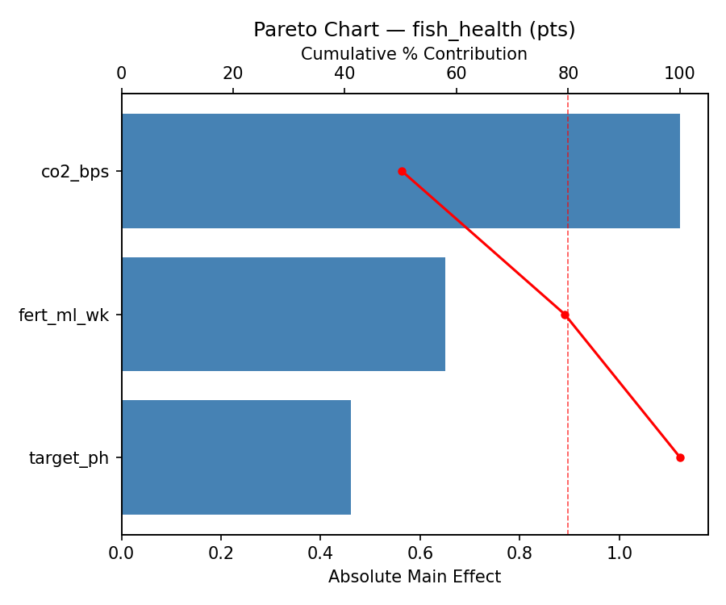
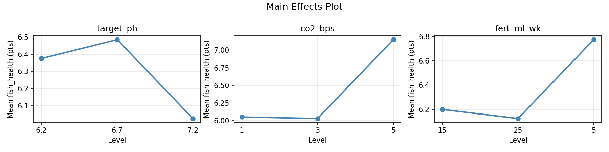
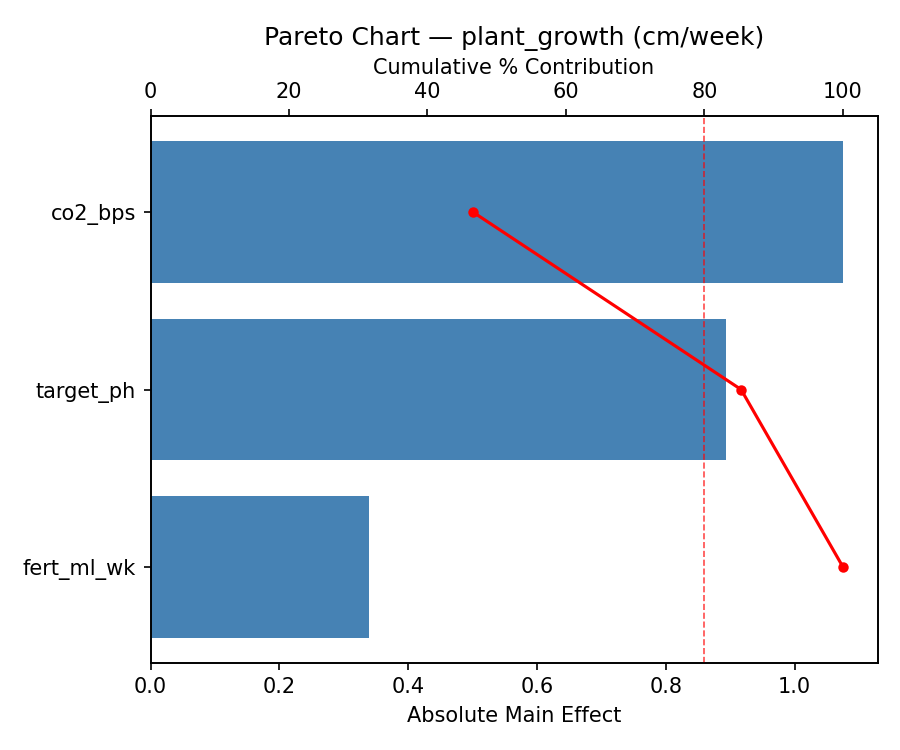
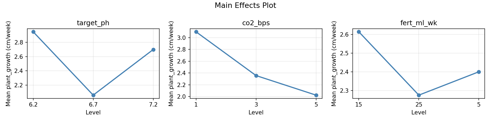
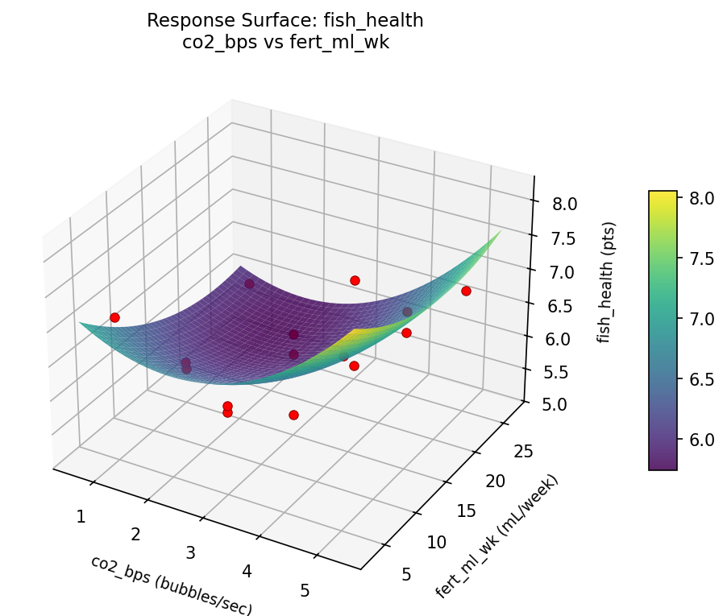
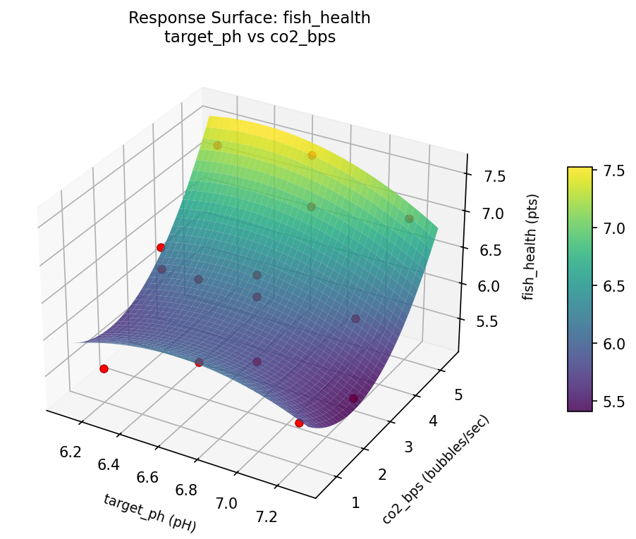
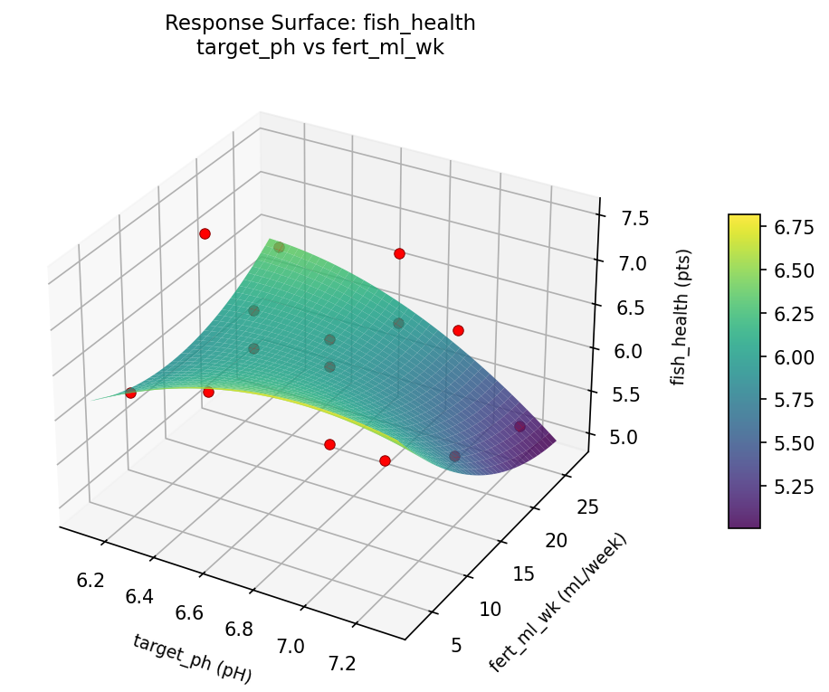
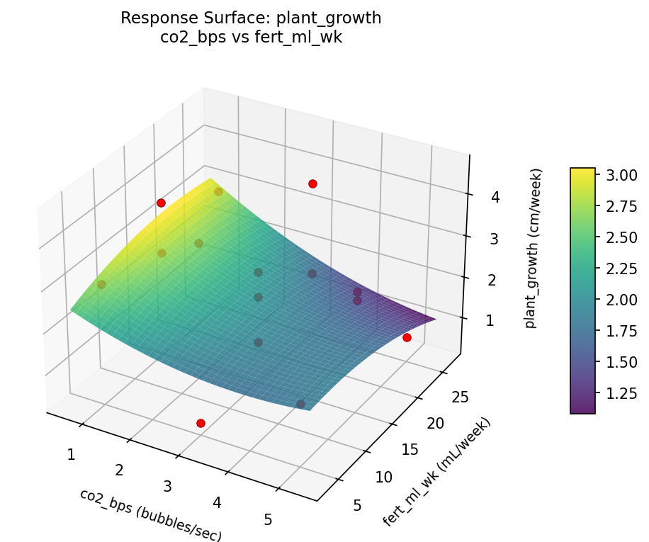
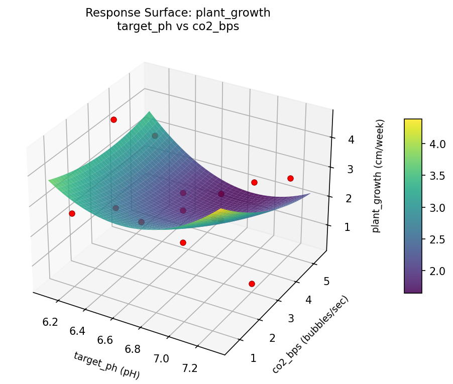
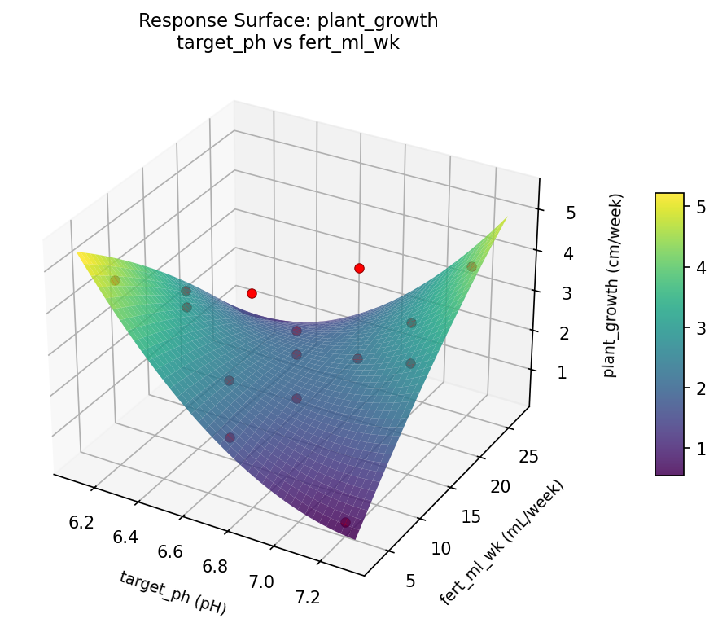

Summary
This experiment investigates aquarium water chemistry. Box-Behnken design to maximize fish health and plant growth by tuning pH, CO2 injection rate, and fertilizer dose.
The design varies 3 factors: target ph (pH), ranging from 6.2 to 7.2, co2 bps (bubbles/sec), ranging from 1 to 5, and fert ml wk (mL/week), ranging from 5 to 25. The goal is to optimize 2 responses: fish health (pts) (maximize) and plant growth (cm/week) (maximize). Fixed conditions held constant across all runs include tank size L = 200, lighting = medium.
A Box-Behnken design was chosen because it efficiently fits quadratic models with 3 continuous factors while avoiding extreme corner combinations — requiring only 15 runs instead of the 8 needed for a full factorial at two levels.
Quadratic response surface models were fitted to capture potential curvature and factor interactions. The RSM contour plots below visualize how pairs of factors jointly affect each response.
Key Findings
For fish health, the most influential factors were fert ml wk (44.9%), target ph (33.4%), co2 bps (21.7%). The best observed value was 7.5 (at target ph = 6.7, co2 bps = 3, fert ml wk = 15).
For plant growth, the most influential factors were co2 bps (48.4%), target ph (34.0%), fert ml wk (17.6%). The best observed value was 4.6 (at target ph = 7.2, co2 bps = 3, fert ml wk = 25).
Recommended Next Steps
- Run confirmation experiments at the predicted optimal settings to validate the model.
- Consider whether any fixed factors should be varied in a future study.
Experimental Setup
Factors
| Factor | Low | High | Unit |
|---|
target_ph | 6.2 | 7.2 | pH |
co2_bps | 1 | 5 | bubbles/sec |
fert_ml_wk | 5 | 25 | mL/week |
Fixed: tank_size_L = 200, lighting = medium
Responses
| Response | Direction | Unit |
|---|
fish_health | ↑ maximize | pts |
plant_growth | ↑ maximize | cm/week |
Configuration
{
"metadata": {
"name": "Aquarium Water Chemistry",
"description": "Box-Behnken design to maximize fish health and plant growth by tuning pH, CO2 injection rate, and fertilizer dose"
},
"factors": [
{
"name": "target_ph",
"levels": [
"6.2",
"7.2"
],
"type": "continuous",
"unit": "pH"
},
{
"name": "co2_bps",
"levels": [
"1",
"5"
],
"type": "continuous",
"unit": "bubbles/sec"
},
{
"name": "fert_ml_wk",
"levels": [
"5",
"25"
],
"type": "continuous",
"unit": "mL/week"
}
],
"fixed_factors": {
"tank_size_L": "200",
"lighting": "medium"
},
"responses": [
{
"name": "fish_health",
"optimize": "maximize",
"unit": "pts"
},
{
"name": "plant_growth",
"optimize": "maximize",
"unit": "cm/week"
}
],
"settings": {
"operation": "box_behnken",
"test_script": "use_cases/145_aquarium_water_chemistry/sim.sh"
}
}
Experimental Matrix
The Box-Behnken Design produces 15 runs. Each row is one experiment with specific factor settings.
| Run | target_ph | co2_bps | fert_ml_wk |
|---|
| 1 | 6.7 | 1 | 5 |
| 2 | 6.7 | 3 | 15 |
| 3 | 7.2 | 3 | 25 |
| 4 | 7.2 | 3 | 5 |
| 5 | 6.7 | 3 | 15 |
| 6 | 6.7 | 3 | 15 |
| 7 | 6.2 | 3 | 25 |
| 8 | 7.2 | 1 | 15 |
| 9 | 6.7 | 1 | 25 |
| 10 | 7.2 | 5 | 15 |
| 11 | 6.2 | 3 | 5 |
| 12 | 6.7 | 5 | 25 |
| 13 | 6.2 | 1 | 15 |
| 14 | 6.2 | 5 | 15 |
| 15 | 6.7 | 5 | 5 |
Step-by-Step Workflow
1
Preview the design
$ python doe.py info --config use_cases/145_aquarium_water_chemistry/config.json
2
Generate the runner script
$ python doe.py generate --config use_cases/145_aquarium_water_chemistry/config.json \
--output use_cases/145_aquarium_water_chemistry/results/run.sh --seed 42
3
Execute the experiments
$ bash use_cases/145_aquarium_water_chemistry/results/run.sh
4
Analyze results
$ python doe.py analyze --config use_cases/145_aquarium_water_chemistry/config.json
5
Get optimization recommendations
$ python doe.py optimize --config use_cases/145_aquarium_water_chemistry/config.json
6
Multi-objective optimization
With 2 competing responses, use --multi to find the best compromise via Derringer–Suich desirability.
$ python doe.py optimize --config use_cases/145_aquarium_water_chemistry/config.json --multi
7
Generate the HTML report
$ python doe.py report --config use_cases/145_aquarium_water_chemistry/config.json \
--output use_cases/145_aquarium_water_chemistry/results/report.html
Features Exercised
| Feature | Value |
|---|
| Design type | box_behnken |
| Factor types | continuous (all 3) |
| Arg style | double-dash |
| Responses | 2 (fish_health ↑, plant_growth ↑) |
| Total runs | 15 |
Analysis Results
Generated from actual experiment runs using the DOE Helper Tool.
Response: fish_health
Top factors: fert_ml_wk (44.9%), target_ph (33.4%), co2_bps (21.7%).
Pareto Chart

Main Effects Plot

Response: plant_growth
Top factors: co2_bps (48.4%), target_ph (34.0%), fert_ml_wk (17.6%).
Pareto Chart

Main Effects Plot

Response Surface Plots
3D surfaces fitted with quadratic RSM. Red dots are observed data points.
fish health co2 bps vs fert ml wk

fish health target ph vs co2 bps

fish health target ph vs fert ml wk

plant growth co2 bps vs fert ml wk

plant growth target ph vs co2 bps

plant growth target ph vs fert ml wk

Multi-Objective Optimization
When responses compete, Derringer–Suich desirability finds the best compromise.
Each response is scaled to a 0–1 desirability, then combined via a weighted geometric mean.
Overall Desirability
D = 0.7500
Per-Response Desirability
| Response | Weight | Desirability | Predicted | Dir |
|---|
fish_health |
2.0 |
|
7.27 0.8646 7.27 pts |
↑ |
plant_growth |
1.5 |
|
3.06 0.6205 3.06 cm/week |
↑ |
Recommended Settings
| Factor | Value |
|---|
target_ph | 6.2 pH |
co2_bps | 1 bubbles/sec |
fert_ml_wk | 19 mL/week |
Source: from RSM model prediction
Trade-off Summary
Sacrifice = how much worse than single-objective best.
| Response | Predicted | Best Observed | Sacrifice |
|---|
plant_growth | 3.06 | 4.60 | +1.54 |
Top 3 Runs by Desirability
| Run | D | Factor Settings |
|---|
| #5 | 0.7095 | target_ph=6.2, co2_bps=5, fert_ml_wk=15 |
| #6 | 0.6677 | target_ph=7.2, co2_bps=1, fert_ml_wk=15 |
Model Quality
| Response | R² | Type |
|---|
plant_growth | 0.1322 | linear |
Full Multi-Objective Output
============================================================
MULTI-OBJECTIVE OPTIMIZATION
Method: Derringer-Suich Desirability Function
============================================================
Overall desirability: D = 0.7500
Response Weight Desirability Predicted Direction
---------------------------------------------------------------------
fish_health 2.0 0.8646 7.27 pts ↑
plant_growth 1.5 0.6205 3.06 cm/week ↑
Recommended settings:
target_ph = 6.2 pH
co2_bps = 1 bubbles/sec
fert_ml_wk = 19 mL/week
(from RSM model prediction)
Trade-off summary:
fish_health: 7.27 (best observed: 7.50, sacrifice: +0.23)
plant_growth: 3.06 (best observed: 4.60, sacrifice: +1.54)
Model quality:
fish_health: R² = 0.7747 (quadratic)
plant_growth: R² = 0.1322 (linear)
Top 3 observed runs by overall desirability:
1. Run #2 (D=0.7490): target_ph=6.2, co2_bps=1, fert_ml_wk=15
2. Run #5 (D=0.7095): target_ph=6.2, co2_bps=5, fert_ml_wk=15
3. Run #6 (D=0.6677): target_ph=7.2, co2_bps=1, fert_ml_wk=15
Full Analysis Output
=== Main Effects: fish_health ===
Factor Effect Std Error % Contribution
--------------------------------------------------------------
fert_ml_wk 0.7000 0.1869 44.9%
target_ph 0.5214 0.1869 33.4%
co2_bps 0.3393 0.1869 21.7%
=== ANOVA Table: fish_health ===
Source DF SS MS F p-value
-----------------------------------------------------------------------------
target_ph 2 0.7015 0.3508 0.948 0.4271
co2_bps 2 0.3173 0.1586 0.429 0.6655
fert_ml_wk 2 0.9848 0.4924 1.331 0.3170
Lack of Fit 6 4.5898 0.7650 2.067 0.3614
Pure Error 2 0.7400 0.3700
Error 8 5.3298 0.3700
Total 14 7.3333 0.5238
=== Summary Statistics: fish_health ===
target_ph:
Level N Mean Std Min Max
------------------------------------------------------------
6.2 4 6.3750 0.7455 5.5000 7.3000
6.7 7 6.1286 0.7064 5.2000 7.1000
7.2 4 6.6500 0.8103 5.6000 7.5000
co2_bps:
Level N Mean Std Min Max
------------------------------------------------------------
1 4 6.4000 0.7616 5.3000 7.0000
3 7 6.1857 0.6669 5.2000 7.3000
5 4 6.5250 0.9323 5.5000 7.5000
fert_ml_wk:
Level N Mean Std Min Max
------------------------------------------------------------
15 7 6.3143 0.7988 5.2000 7.5000
25 4 6.7000 0.7616 5.6000 7.3000
5 4 6.0000 0.5099 5.3000 6.5000
=== Main Effects: plant_growth ===
Factor Effect Std Error % Contribution
--------------------------------------------------------------
co2_bps 0.9607 0.3089 48.4%
target_ph 0.6750 0.3089 34.0%
fert_ml_wk 0.3500 0.3089 17.6%
=== ANOVA Table: plant_growth ===
Source DF SS MS F p-value
-----------------------------------------------------------------------------
target_ph 2 0.9615 0.4808 0.097 0.9089
co2_bps 2 2.3873 1.1936 0.240 0.7921
fert_ml_wk 2 0.2498 0.1249 0.025 0.9753
Lack of Fit 6 6.4881 1.0813 0.217 0.9385
Pure Error 2 9.9467 4.9733
Error 8 16.4348 4.9733
Total 14 20.0333 1.4310
=== Summary Statistics: plant_growth ===
target_ph:
Level N Mean Std Min Max
------------------------------------------------------------
6.2 4 2.0750 0.8770 1.1000 3.0000
6.7 7 2.5286 1.5457 0.4000 4.6000
7.2 4 2.7500 0.9000 1.6000 3.8000
co2_bps:
Level N Mean Std Min Max
------------------------------------------------------------
1 4 1.8250 0.8958 0.7000 2.8000
3 7 2.7857 1.5236 0.4000 4.6000
5 4 2.5500 0.6608 1.6000 3.0000
fert_ml_wk:
Level N Mean Std Min Max
------------------------------------------------------------
15 7 2.4857 1.4276 0.4000 4.6000
25 4 2.6250 1.3376 0.7000 3.8000
5 4 2.2750 0.8539 1.1000 3.0000
Optimization Recommendations
=== Optimization: fish_health ===
Direction: maximize
Best observed run: #9
target_ph = 6.7
co2_bps = 3
fert_ml_wk = 15
Value: 7.5
RSM Model (linear, R² = 0.4214, Adj R² = 0.2636):
Coefficients:
intercept +6.3333
target_ph -0.5750
co2_bps +0.1250
fert_ml_wk -0.2000
RSM Model (quadratic, R² = 0.7039, Adj R² = 0.1708):
Coefficients:
intercept +6.9667
target_ph -0.5750
co2_bps +0.1250
fert_ml_wk -0.2000
target_ph*co2_bps +0.2750
target_ph*fert_ml_wk +0.2250
co2_bps*fert_ml_wk -0.0250
target_ph^2 -0.3458
co2_bps^2 -0.4958
fert_ml_wk^2 -0.3458
Curvature analysis:
co2_bps coef=-0.4958 concave (has a maximum)
target_ph coef=-0.3458 concave (has a maximum)
fert_ml_wk coef=-0.3458 concave (has a maximum)
Predicted optimum (from linear model, at observed points):
target_ph = 6.2
co2_bps = 3
fert_ml_wk = 5
Predicted value: 7.1083
Surface optimum (via L-BFGS-B, linear model):
target_ph = 6.2
co2_bps = 5
fert_ml_wk = 5
Predicted value: 7.2333
Model quality: Weak fit — consider adding center points or using a different design.
Factor importance:
1. target_ph (effect: 1.2, contribution: 52.1%)
2. co2_bps (effect: 0.6, contribution: 25.9%)
3. fert_ml_wk (effect: 0.5, contribution: 22.0%)
=== Optimization: plant_growth ===
Direction: maximize
Best observed run: #12
target_ph = 7.2
co2_bps = 3
fert_ml_wk = 25
Value: 4.6
RSM Model (linear, R² = 0.3438, Adj R² = 0.1648):
Coefficients:
intercept +2.4667
target_ph +0.8375
co2_bps +0.1375
fert_ml_wk +0.3750
RSM Model (quadratic, R² = 0.5463, Adj R² = -0.2704):
Coefficients:
intercept +1.6667
target_ph +0.8375
co2_bps +0.1375
fert_ml_wk +0.3750
target_ph*co2_bps -0.2500
target_ph*fert_ml_wk -0.0250
co2_bps*fert_ml_wk -0.2250
target_ph^2 +0.8917
co2_bps^2 +0.4917
fert_ml_wk^2 +0.1167
Curvature analysis:
target_ph coef=+0.8917 convex (has a minimum)
co2_bps coef=+0.4917 convex (has a minimum)
fert_ml_wk coef=+0.1167 convex (has a minimum)
Predicted optimum (from linear model, at observed points):
target_ph = 7.2
co2_bps = 3
fert_ml_wk = 25
Predicted value: 3.6792
Surface optimum (via L-BFGS-B, linear model):
target_ph = 7.2
co2_bps = 5
fert_ml_wk = 25
Predicted value: 3.8167
Model quality: Weak fit — consider adding center points or using a different design.
Factor importance:
1. target_ph (effect: 1.7, contribution: 56.3%)
2. fert_ml_wk (effect: 0.8, contribution: 25.1%)
3. co2_bps (effect: 0.6, contribution: 18.6%)